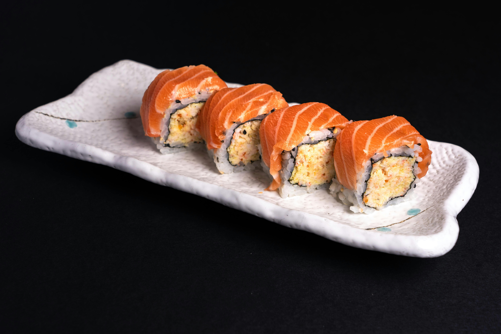

Uramaki

Home
Uramaki is modern sushi type, where the seasoned rice is on the outside and the dried seaweed
(nori) is on the inside, directly wrapping the center ingredients.
Ingrediens
For the Sushi Rice:
-
300 g - Japanese short-grain Rice
-
45 ml - Rice vinegar
-
5g - salt
For the Rolls:
-
5 sheets of Nori (dried seaweed), cut in half crosswise
-
150 g - filling of your choice (cucumber, tuna, salmon ora avocado)
-
30 g - Toasted sesame seeds (for the outer coating)
For serving
- soy sauce
- pickled ginger
- wasabi
Steps:
-
Prepare the Sushi Rice - rinse the rice thoroughly under cold water until
the water runs clear, then cook it according to your preferred method. Transfer the
hot cooked rice into a wide bowl and gently fold in the rice vinegar, and salt.
Allow the seasoned rice to cool completely to room temperature.
-
Prep the Fillings - slice your chosen fish and vegetables into long,
even strips. If using avocado, cut it into uniform slices. Ensure all your
ingredients are ready and organized before you begin assembling the rolls.
-
Prepare the Nori and Rice - cover your bamboo rolling mat tightly with
plastic wrap to prevent the rice from sticking to the bamboo. Place a half-sheet
of nori flat on the mat. Wet your hands and spread an even layer of rice over
the entire surface of the nori, leaving no bare edges. Sprinkle an even layer
of toasted sesame seeds directly over the rice.
-
Flip and Fill - carefully pick up the nori and rice together, and flip
the entire sheet over so the rice is now facing down on the plastic-wrapped
mat and the bare nori is facing up. Arrange your sliced fillings horizontally
across the center of the nori.
-
Roll and Slice - use the bamboo mat to lift the bottom edge over the
fillings, tucking it tightly to form a firm cylinder. Continue rolling forward,
applying gentle, even pressure to shape the roll. Remove the mat, wet a very
sharp knife with a damp cloth, and slice the roll into 6 to 8 equal pieces,
wiping and re-wetting the blade between cuts.